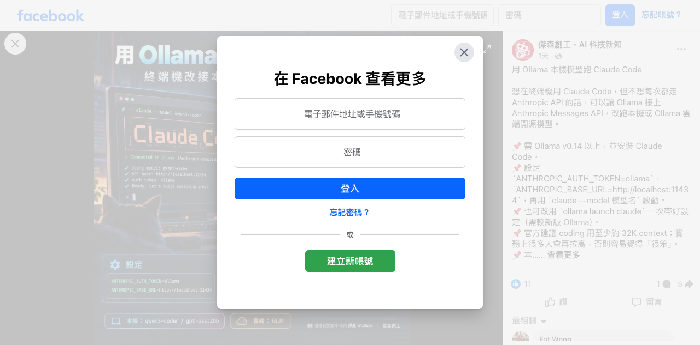

Facebook｜用 Ollama 的 Anthropic 相容 API 對接 Claude Code：本機模型、雲端模型與能力邊界

一句話摘要
可以，**Ollama 官方確實提供 Anthropic Messages API 相容介面，且官方文件明確提到可連接 Claude Code**。但這是把 Claude Code 的 API 請求導向另一個模型供應端，不是離線使用 Anthropic Claude 模型本身；程式能力、長上下文、工具呼叫與可靠性要以所選模型和實測為準。
Facebook 貼文說了什麼
「傑森創工 - AI 科技新知」的圖文主張：可用 Ollama 的 Anthropic 相容 API，讓終端機中的 Claude Code 改接本機或 Ollama 雲端開源模型；貼文列出以下概念：
- 需要 Ollama 與 Claude Code；貼文稱 Ollama 要 v0.14 以上。
- 將 `ANTHROPIC_AUTH_TOKEN` 設為 `ollama`，並將 `ANTHROPIC_BASE_URL` 指向 `http://localhost:11434`。
- 用 `claude --model 模型名` 選取模型；圖例可見 `qwen3-coder`。
- 貼文另提到 `ollama launch claude` 與「coding 至少約 32K context」的建議。
前兩項環境變數與本機位址，能由 Ollama 官方 Anthropic 相容文件確認。至於貼文所述的最低版本、`ollama launch claude` 指令細節與 32K 建議，本次未在同一份官方 API 文件中獨立驗證，因此保留為**社群貼文主張**，不當成通用前置條件或品質保證。
官方可確認的做法
Ollama 官方文件說明：其服務支援 Anthropic Messages API 的**子集**，可以連接 Anthropic client 與如 Claude Code 的工具。用本機 server 時，文件給出的核心設定為：
```bash
export ANTHROPIC_AUTH_TOKEN=ollama # 必填，但本機 server 會忽略
export ANTHROPIC_BASE_URL=http://localhost:11434
```
官方也示範以模型名稱（例如 `qwen3-coder`）向本機 `http://localhost:11434/v1/messages` 發送請求。若工具依賴既有 Anthropic 模型名稱，文件提到可用 `ollama cp` 為已下載模型建立別名；這只是名稱映射，不會改變底層模型能力。
關鍵差異：不是所有 Claude API 功能都會無縫可用
官方文件列出這個相容層的限制，導入前尤其要注意：
- 支援的是 Anthropic Messages API 的一部分；本機模型與雲端模型的可用功能不同。
- `tool_choice` 的強制／禁止特定工具、prompt caching、Batches API、citations、PDF document content 等，目前不在完整支援範圍。
- 圖片可用 base64 內容；URL 圖片不是此層的完整支援情境。
- token 計數是底層模型 tokenizer 的近似值，不應直接與 Claude 的 token 行為等同。
- 本機 server 不驗證 API key；但直連 Ollama cloud 則需要有效 bearer token，且應使用 `OLLAMA_API_KEY`，不要把雲端金鑰寫進專案、shell history 或公開設定檔。
對 Coding Agent 工作流的實際意義
這個做法適合用來測試「模型 API 相容度」與「在可控專案內交辦基礎 coding 任務」，例如重構建議、測試草稿、文件整理或小範圍 bug 排查。它不適合未經測試就取代關鍵專案中的高能力模型：
- **先做唯讀或低風險任務。** 使用獨立工作目錄、測試 repository 與非正式憑證；不要一開始就允許 agent 操作 production、Git push、部署或 secrets。
- **讓模型名稱與能力分開看。** 即使以 `claude-*` 別名啟動，真正決定品質的是背後的 Qwen、GPT-OSS 或其他模型、量化、硬體與 context 設定。
- **保留人工核准。** Coding agent 可能執行 shell、修改檔案或使用工具；本機推論不等於安全，prompt injection、錯誤命令與外洩風險仍存在。
- **檢查 context 與工具回合。** 較小模型在長任務容易遺失先前限制、工具輸出或檔案脈絡。用小任務基準測試，而不是只看一次成功的 demo。
- **分清本機與雲端。** 呼叫本機 `localhost:11434` 可將推論留在本機硬體；若改用 Ollama cloud model，請先確認帳號、資料政策、成本與網路傳輸範圍。
欒帥的建議起手式
若要把它加入現有 Hermes／Codex／Claude Code 工作流，建議先新建一個「Ollama 實驗」資料夾，只讓 agent 讀寫該資料夾，並以三個固定測試比較不同模型：讀懂小型程式庫、補一個測試、修一個已知 bug。記錄成功率、指令錯誤率、耗時與記憶遺失情況，再決定哪些任務值得轉至本機模型。
原始連結與查核來源
- Facebook 分享：https://www.facebook.com/share/19nn7z5Z8u/?mibextid=wwXIfr
- Facebook 相片／貼文：https://www.facebook.com/photo.php?fbid=1589584806522798&set=a.451583130322977&type=3
- Ollama 官方：Anthropic compatibility：https://docs.ollama.com/api/anthropic-compatibility
- Ollama 官方：OpenAI compatibility：https://docs.ollama.com/api/openai-compatibility